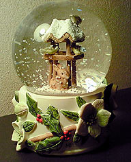

|
■2006/12/15/(Fri)23:04
アラモアナ
|

アラモアナで買い物
あーこれが噂のアラモアナなのかー！
うさぎと小鳥が寒そうにしてるスノードーム購入。
クリスマスのベレン人形が欲しかったのですが…あまりにも大きいのであきらめました…
この季節になると、小学生のときに通いつめ、マリア様役までゲットした日曜学校のクリスマスを思い出します。
献金のときにもらえるカード、祭壇裏のパンとワイン（こっそり食べる）クリスマスが近づくと灯される蝋燭。
クリスチャンとして洗礼を受けてはいないのだけれども、そーゆー非日常としての週末が、賛美歌を歌い、聖書を読み、祭壇裏に忍び込みとゆー週末が、「厳か」という意味を私に教えてくれたような気がします。
|
| |